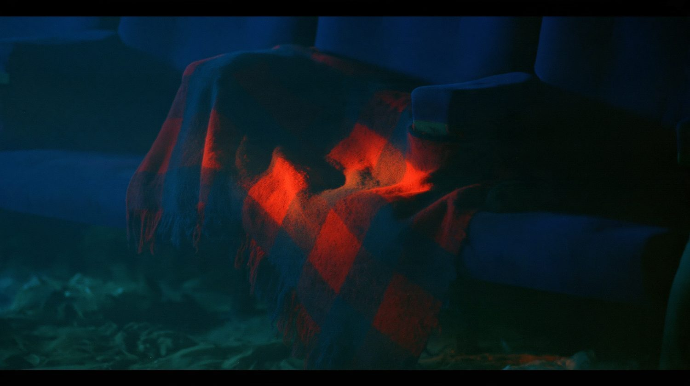
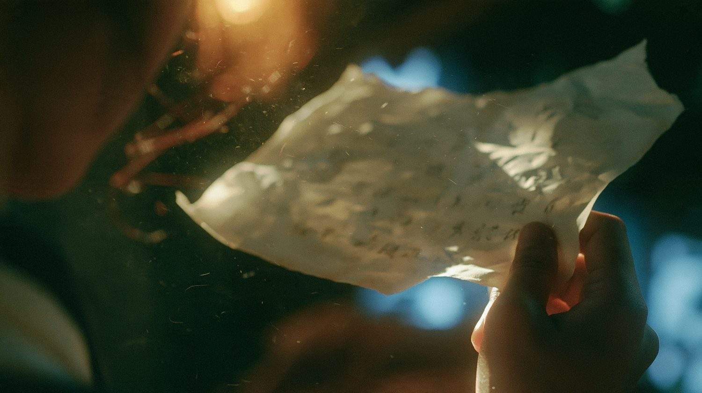

一部 6 分 56 秒的 AI 剧情短片。这一页拆开它的视觉：色彩怎样分出现在与回忆，人物、空间和道具怎样一起讲同一个故事。
LOGLINE · 一句话
九十六岁的盲眼老人阿竹，独自走进县城那座还在营业、却已空无一人的旧影院；在黑下来的影厅里，她听见了 1940 年代的三段往事。
01 · COLOUR SCRIPT
现实是冷的、灰绿的，是她看不见的光；回忆有真正的光源，是暖的。三段回忆一暖（灯泡）、一白（医院）、一暖银（放映机），每次切回现在，都一下变冷。
原始色卡 · 点开查看
02 · STORYBOARD
从 93 个分镜里挑出 26 格。按幕筛选，或者直接拖动胶片。每格标着分镜号和这一镜里的那句台词。
03 · CHARACTERS
三个人：现在的阿竹、1940 年代的阿竹、梅。老王从不出现在画面里，只剩一件外套、一副断腿的老花镜和一把空椅子。
04 · SPACES
拖动中间的分割线：左边是她现在走过的地方，右边是她听见的 1940 年代。冷与暖在同一个画框里对照。
05 · MOTIF
全片没有一句台词解释她失去了什么。这件事交给一条旧毯子：往下滚动，看它怎样从 1940 年代走到现在。

06 · PROPS
她看不见，所以每一件道具都要能被摸到、被听到。点开任意一件看大图。

07 · RULES
美学执行不只是挑好看的画面，更多是守住几条贯穿全片的约束，让 93 个分镜看起来出自同一个人的眼睛。
暖色只属于回忆。
进入影厅之后，现在只拍手和毯子。
梅是一个真实的人，不是鬼魂。
没有配乐。
她的嗓子一直是坏的。
不流血，不暴力。
AH ZHU: THE LATE ECHO
竹